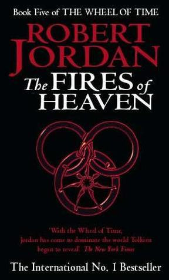

"The Fires of Heaven"
- Read on 2015-07-27
- Rating: ️️️️️
- Format: 🎧 (36 hours 27 minutes)
Meh. That's about how I feel on this book. Sure, it has some plot points that are crucial to the series, but I wasn't in love with most of the story lines. It feels like this book is just filler until things get good. I'm still tired of Nynaeve, and her constant anger and stubbornness. Moiraine's fielty to Rand is a natural step, considering her life goals. I suppose the part I actually _do_ like is their interactions in the Tel'aran'rhiod - a place where if you think it, it can happen (or exist). I also like Mat's emergence into his true role, what with his newly acquired memories. All in all, however, it's just a mediocre book in this series.
- Prior: The Shadow Rising
- Next: Lord of Chaos